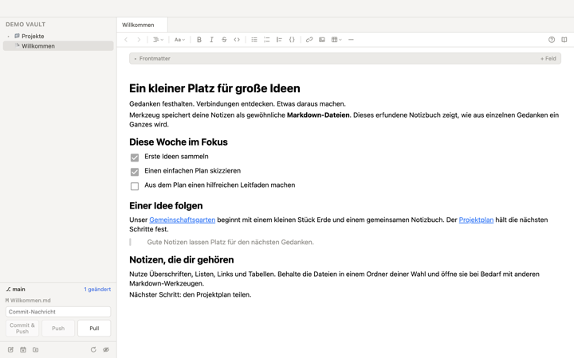
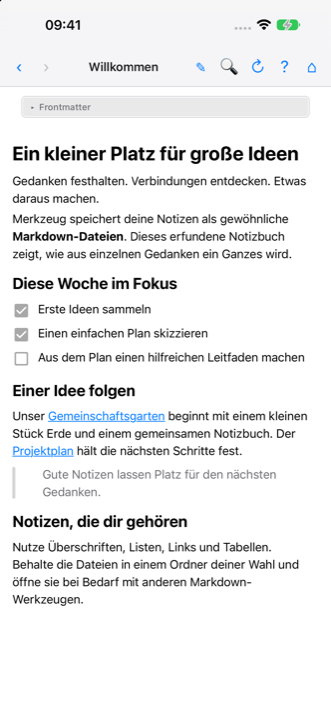
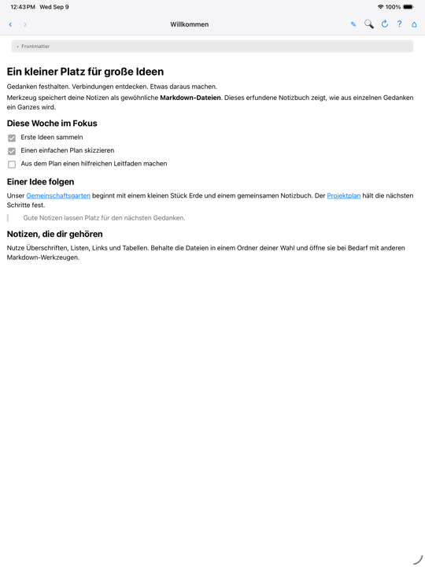
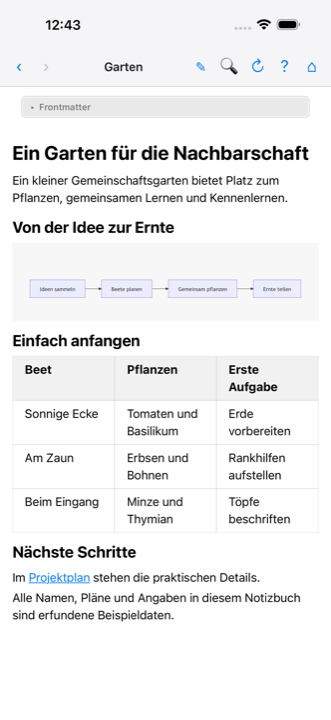
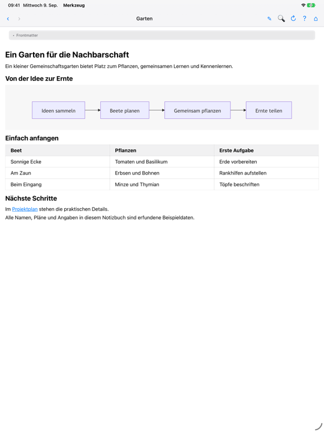
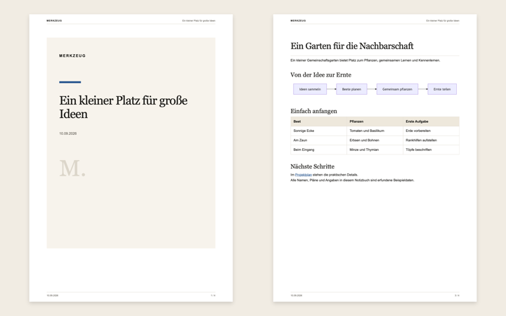
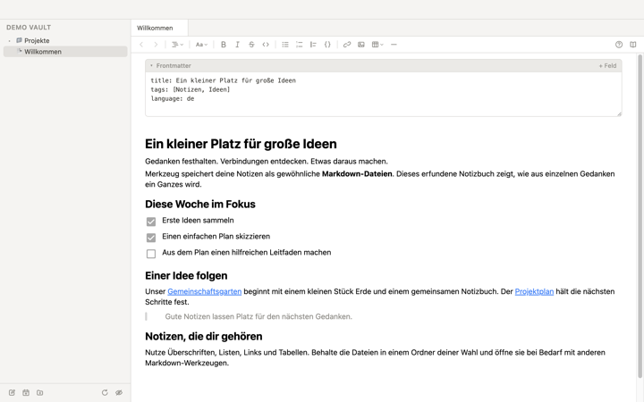
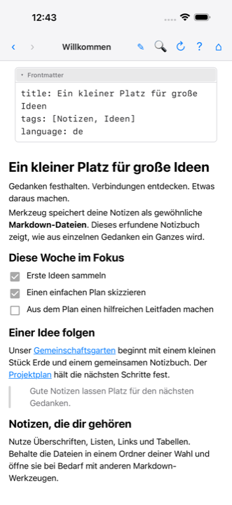
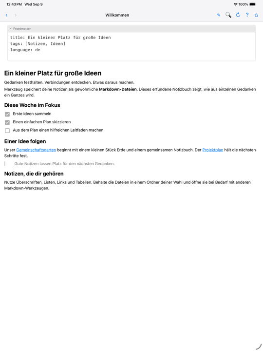

Markdown.
Your
way
Entdecke und bearbeite Markdown-Sammlungen und mache daraus Dokumente in deinem Layout – vom persönlichen Notizbuch bis zur Dokumentation deiner Agenten.
Jetzt verfügbar. Windows folgt. Android & VS Code sind geplant. Open Source unter der MIT-Lizenz ↗
Ein Ordner. Deine ganze Sammlung.
Ein Vault ist einfach ein Ordner mit Markdown-Dateien. Dein Notizbuch, dein Cloud-Ordner oder die Dokumentation neben deinem Code.
- Lokal & in der CloudÖffne vorhandene Dateien, ohne sie in eine neue Datenbank zu importieren. Dein gewählter Cloud-Dienst übernimmt die Synchronisation.
- Git, auf deine ArtNutze Repository-Ordner am Mac und unter Linux oder direkt in IntelliJ. Auf iPhone und iPad öffnest du den Repository-Ordner deiner Git-App über die Dateien-App.
- Offene DateienMarkdown bleibt Markdown. Du kannst dieselben Dateien mit anderen Editoren, Git-Werkzeugen und Agenten bearbeiten.
Git auf iPhone und iPad: freie Wahl, direkte Integration
Working Copy ist eine separate Git-App für iPhone und iPad. Sie klont Repositories und kümmert sich um Versionsverwaltung und Synchronisation; Merkzeug liest und bearbeitet die Markdown-Dateien darin.
Du kannst auch jede andere Git-App verwenden, die ihren Repository-Ordner über die Dateien-App zum Öffnen und Bearbeiten freigibt. Git-Aktionen führst du dann in dieser App aus. Für Working Copy bietet Merkzeug zusätzlich eine direkte Integration: Nach der Einrichtung kannst du Pull, Commit und Push aus Merkzeug anstoßen.
Working Copy im App Store ↗ · Working Copy auf iPhone und iPad →Echte Screenshots

Mac
iPhone
iPad IntelliJ
IntelliJ

Weniger Syntax. Mehr Überblick.
Bearbeite Überschriften, Tabellen und Aufgaben visuell. Mermaid-Diagramme leben direkt im Dokument: Code bearbeiten, Ergebnis sehen, weiterlesen.
- Lesen & navigierenAuf Mac, Linux, iPhone und iPad folgst du im Lesemodus Links, ohne versehentlich Text zu ändern. Zum Bearbeiten wechselst du zurück in den Editor.
- In deiner IDEMerkzeug ergänzt andere Markdown-Editoren in IntelliJ. Wechsle über die Editor-Tabs zwischen visueller Bearbeitung und Quelltext; verlinkte Dateien öffnet die IDE.
Echte Screenshots
- Mac

iPhone
iPad IntelliJ
IntelliJ- VS CodeGeplant

Dein Markdown. Dein fertiges Dokument.
Eine Sammlung von Notizen wird zum Dokument für Kunden, Teams oder die nächste Besprechung. Mit deinem Briefkopf, deinen Schriften und deinem Layout.
- Ein Layout, mehrfach genutztNutze HTML/CSS-Vorlagen für die Darstellung beim Bearbeiten und beim Drucken. Mac, Linux, iPhone, iPad und IntelliJ exportieren damit auch PDF-Dateien.
- Mehrere Notizen, ein PDFAuf Mac, Linux, iPhone, iPad und in IntelliJ kann ein Übersichts-Dokument seine direkt verlinkten Markdown-Dateien aus demselben Ordner und dessen Unterordnern in den Export aufnehmen.
- Die Details bestimmen das ErgebnisSteuere den Export mit Frontmatter: Titel, Sprache, Inhaltsverzeichnis und Ausschluss einzelner Notizen. Dein Markdown bleibt die Quelle.
- Vorlagen teilenSynchronisiere Vorlagen zwischen Apple-Geräten über iCloud oder lege sie direkt im Vault ab. Wähle den Ort bei den PDF-Funktionen; die gemeinsame Zuordnung reist mit deinem Git-Repository mit.
Echte Screenshots

Mac · PDF
Mac
iPhone
iPad IntelliJ
IntelliJ IntelliJ · PDF
IntelliJ · PDF


Notizen verändern sich. Ihre Verbindungen bleiben.
Eingefügte Bilder liegen im zugehörigen .assets-Ordner neben der Notiz. Benenne die Notiz um oder verschiebe sie – Bilder und alle Links folgen.
- Bilder neben der NotizEingefügte Bilder landen im zugehörigen .assets-Ordner. Beim Verschieben oder Umbenennen mit Merkzeug wird er mitgenommen; Verweise werden angepasst.
- Ein Titel, ein DateinameAm Mac und unter Linux kann der Dateiname der ersten Hauptüberschrift folgen. Meeting-Notizen auf Mac, Linux, iPhone und iPad folgen ihrer Überschrift auch bei Änderungen. In IntelliJ bleibt die IDE für Dateinamen zuständig.
- Refactoring inklusiveMerkzeug aktualisiert lokale Markdown-Links beim Umbenennen und Verschieben. Das IntelliJ-Plugin ergänzt dafür auch die Move/Rename-Aktionen der IDE um die Asset-Regeln.
Echte Screenshots
 IntelliJ
IntelliJ

Agenten schreiben mit. Du behältst den Überblick.
Aus vielen generierten Markdown-Dateien wird eine lesbare Sammlung. Merkzeug hilft dir beim Prüfen, Bearbeiten und Weitergeben.
- Ein Prompt für dein LayoutGib deinem Agenten den Vorlagen-Prompt mit Dateistruktur, verfügbaren Feldern und Styling-Regeln. So kann er eine Vorlage an dein Corporate Design anpassen.
- Die Regeln mitgebenPrüfe die Asset-Hinweise und vorhandenen AGENTS.md-/CLAUDE.md-Dateien. Du wählst, in welche Dateien die Hinweise eingefügt werden. Merkzeug führt selbst keine Agenten aus.
Echte Screenshots
 IntelliJ
IntelliJ


Vom Termin zur Meeting-Notiz.
Wähle auf Mac, iPhone oder iPad einen Termin und starte mit Titel, Zeit und Teilnehmern statt einer leeren Seite. Unter Linux und in IntelliJ nutzt du ICS-Dateien oder HTTPS/Webcal-Abos; IntelliJ unter Windows liest zusätzlich das klassische Outlook. Der Kalender bleibt unverändert. Für Ideen und persönliche Notizen brauchst du weder Git noch einen Agenten.

Merkzeug vs Obsidian
Ein fester Markdown-Workflow – ohne Plugin-Labyrinth.
- Ja
- Teilweise
- Nein
| Funktion | Merkzeug | Obsidian |
|---|---|---|
| Mermaid und Bilder direkt im Dokument | Ja | Ja |
| Verlinkte Dokumente verwalten | Ja | Ja |
| Bilder verwalten (verschieben, umbenennen) | Ja | Teilweise |
| Alle Funktionen auf Desktop und Mobil | Ja | Teilweise |
| Läuft in IDEs (IntelliJ, Visual Studio Code) | JaIntelliJ · VS Code geplant | Nein |
| Integration mit Git-Apps auf iOS | Ja | Teilweise |
| Schnell, schlank, fester Funktionsumfang | Ja | Nein |
| Plugin-System | Nein | Ja |
Unsere Einschätzung der Kern-Apps ohne Community-Plugins, Stand September 2026. Quelle: COMPARISON.md. Obsidian ist eine Marke des jeweiligen Inhabers; Merkzeug steht in keiner Verbindung zu Obsidian.
Dein Workflow. Dein Gerät.
Verfügbar für Mac, iPhone, iPad, Linux und IntelliJ IDEA. Die Versionen teilen das Dateiformat und den visuellen Editor; ihre Integration passt zum jeweiligen Gerät. Windows folgt als nächste Desktop-Version; Android & VS Code sind geplant, ohne zugesagten Veröffentlichungstermin.
| Funktion | Mac | iPhone & iPad | IntelliJ IDEA | Linux |
|---|---|---|---|---|
| Visuell bearbeiten & Mermaid | Ja | Ja | Ja | Ja |
| Lesemodus | Ja | Ja | Geplant | Ja |
| Vorlagen beim Bearbeiten | Ja | Ja | Ja | Ja |
| PDF-Datei exportieren | Ja | Ja | Ja | Ja |
| Drucken mit Vorlage | Ja | AirPrint | PDF-Vorschau | System-Druckdialog |
| Verlinkte Notizen im PDF | Ja | Ja | Ja | Ja |
| Kalender & Meeting-Notizen | Ja | Ja | ICS / Webcal | ICS / Webcal |
| Git-Workflow | Integriert | Externe Git-App; Working Copy integriert | IntelliJ | Installierter Git-Client |
| Bilder & Links bei Move/Rename | Ja | Ja | IDE-Refactoring | Ja |
Die Hilfe beschreibt Voraussetzungen und Unterschiede im Detail. Working Copy ist eine separate App. Das IntelliJ-Plugin ist im Stable-Kanal verfügbar. Linux und IntelliJ nutzen ICS-Importe oder HTTPS/Webcal-Abos für Kalender; unter Linux benötigen private Abos einen System-Schlüsselbund. Für Git muss ein Git-Client installiert sein.
Deine Notizen auf Linux.
Wähle zuerst deine Prozessorarchitektur, dann das Paket für deine Distribution. Jeder Download enthält nur eine Architektur. Updates werden manuell installiert. Bei Unsicherheit zeigt uname -m die Architektur: x86_64 steht für Intel/AMD, aarch64 für ARM64.
Intel / AMD · x86_64
ARM64 · aarch64
Für ARM-Linux, etwa Linux in Parallels auf Macs mit Apple Silicon.
AppImage benötigt FUSE 2 und vom System erlaubte unprivilegierte User-Namespaces. Nutze bei entsprechenden Systembeschränkungen DEB oder RPM. DEB und RPM werden über die Paketverwaltung installiert. Nutze lokale Ordner, Git-Repositories oder eingebundene Sync-Ordner; automatische iCloud-Erkennung gibt es unter Linux nicht. SHA-256 · Installation und Hilfe
Release Notes
Was sich in Merkzeug tut.
Version 1.4 wird vorbereitet. Hier findest du die vorgesehenen Inhalte; veröffentlichte Updates kommen hinzu, sobald sie verfügbar sind.
Release Notes lesen